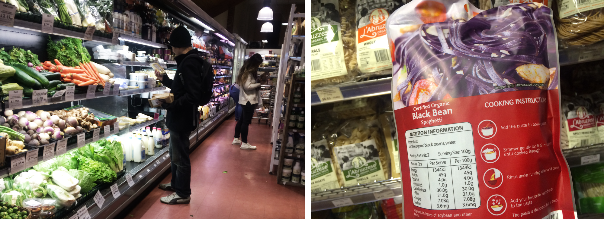
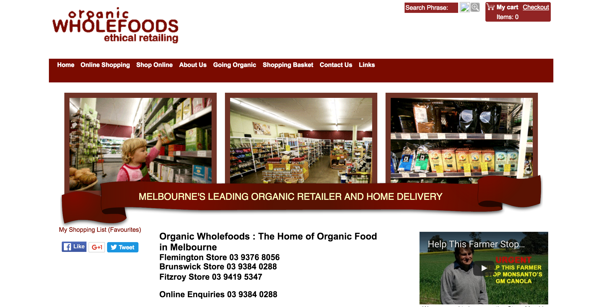
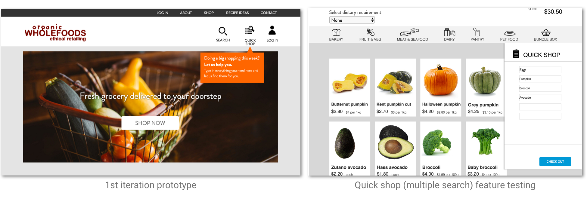
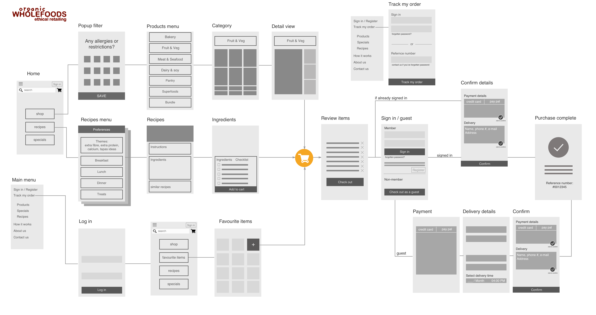
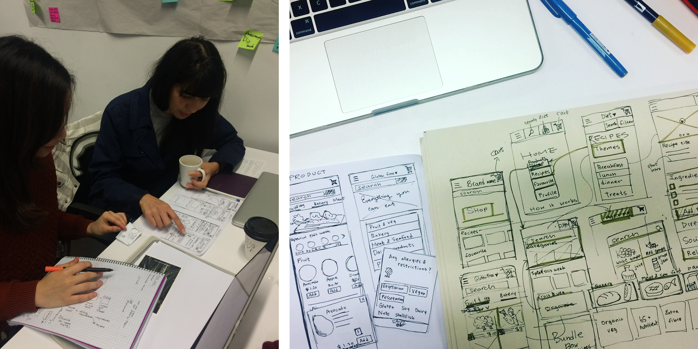
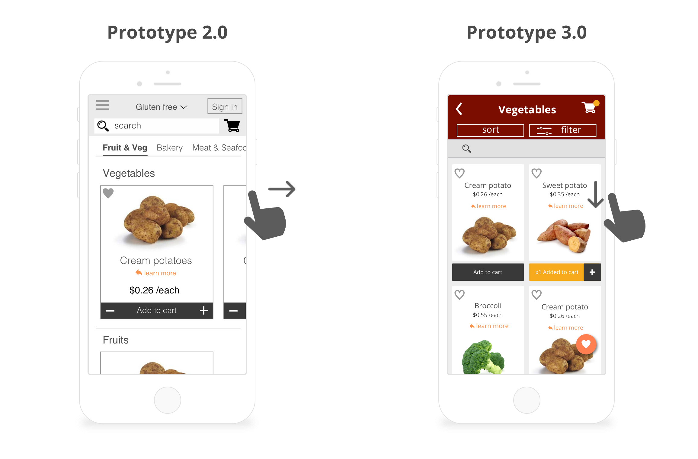
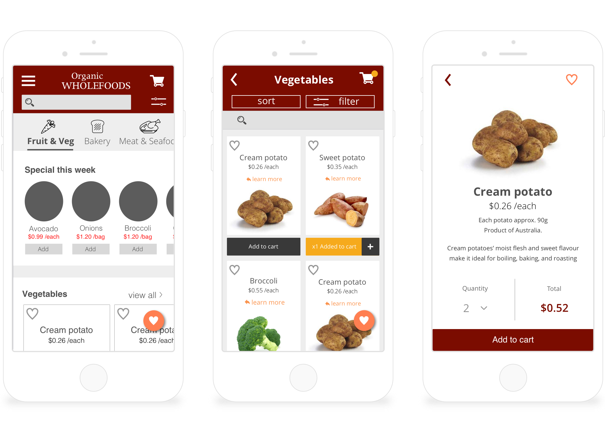

The Beginning
One good Saturday, I was wandering around Fitzroy, my favourite area in Melbourne, and came across this beautiful shop. Firstly, the shop display really caught my eyes. The shop gave me a sense of honesty and freshness of its products.
Observation
I was curious who were the actual customers. While I was in the shop, I got to observe people and found out why some people choose to shop there. One thing I have noticed different there was that people did their shopping seriously at Organic Wholefoods, unlike I’ve seen in other supermarkets. Most of their customers take their time to read through ingredient labels or product description. After speaking to a few customers, I found out many of the customers have certain dietary restrictions, due to own choices, allergies, or intolerance. Due to their special deitary requirement, they prefer to eat organic just to be healthy in general.
The Problem
People with dietary requirements like vegetarians, gluten-intolerance, or lactose-intolerance have limited selections when it comes to grocery shopping. It takes longer for them to shop as they often need to go through ingredients before purchasing the food, especially for processed or packaged food.
User journey
1. It takes a lot of time to shop ( going through the ingredients and label reading) 2. many people just keep buying the things they’re familiar with because they’re not sure what else they can eat
Meet Joanna
Joanna was diagnosed with celiac, after many years of mysterious symptoms. She felt relieved to finally know what’s wrong with her body, but at the same time she was frustrated not knowing what can she eat. She had to change her lifestyle to eat glueten-free and be conscious about her selection of food. She did a lot of research about what she can eat and she cannot eat. There’s only a small section in the supermarket for ‘gluten-fee’ customers. In fact, there are many other gluten-free items in the supermarket mixed with all the food, such as sauce, yogurt, and some packaged frozen food. It now takes twice as much time as before to find her products and search for recipes.
Challenge
How might we make the grocery shopping experience easier for people who have certain dietary requirements?
Discovery from existing site
contents are out of place hard to browse on mobile
The early approach
Do we need a shopping list?
From my initial user research, I found out that 30% of the people like to create a shopping list before they go and do their grocery shopping. I also noticed most grocery apps/ websites have a shopping list feature. So I quickly included a shopping list in my first iteration and tested.
Soon I discovered there’s a pattern formed as those users were shopping online with a list. They tend to go straight to search bar, and pick the item, then search again for the next item. I then rolled out a multiple search feature for the second iteration, which combined the shopping list and the search. I called it "quick shop". However, the user test has shown that people were confused about having a search bar, and multiple search next to each other.
Shopping list is good for physically going to the shop as you walk around to grab items from different shelves. For online shopping, people focus more on the search rather than having a list then tick off their list. From the user test result, I learnt that users don’t need the list feature unless they go shop in physical stores; what they need is a thoughtful search feature to help them to stay focus on the page to get the job done.
My biggest takeaway from my first design iteration was to dive deeper into the reasons behind - not just identify the syndromes but the real problems.
Second iteration- refocus
After getting feedback from my first iteration, reviewing the existing site and more user research with a professional dietitian, I revisited my problem statement and worked out my MVP(minimum viable product) based on 3 different scenarios.
1. Dietary filter User can browse everything he/she can eat in the store, withiut feeling caged in certain section.
2. Easy search Most people go straight to search if they know what they want. Their actions are: search- add to cart- repeat.
3. Re-order From my user interview I found out that many people do repeat purchase when it comes to grocery shopping.
Putting things together
Mobile first
Having received lots information from user reesearch, I noticed myself adding lots features into the product. I decided to go for the mobile first approach on my second design iteration, which allowed me to focus on user first rather than feature first. Starting from the mobile design helps to keep the design minimal, to develop better usability from focusing on the necessary elements on the page.
Guerrilla testing
I went ahead and sketched up my 2nd iteration on paper and validate through user testing. I got to observe how user browse the product and explored different ways of displaying product description on paper. With limited space on mobile phone, it was a challenge. After exploring several options of displaying the items, I found that using cards is the most effective way to show different items and with the option to expand for more information.
Mobile gesture
The interface
Browsing interaction

User journey 1- Dietary filter
- Browsing for ideas to shop and to cook.
- Selecting ingredients that you can't eat.
- View all items in different categories, everything that you can eat.
What does success look like
To measure success, here are some of the things:
- cut down half of the time spent on selecting items
- pleasant shopping and cooking experience
- increase online sale and streamline the customer experience process